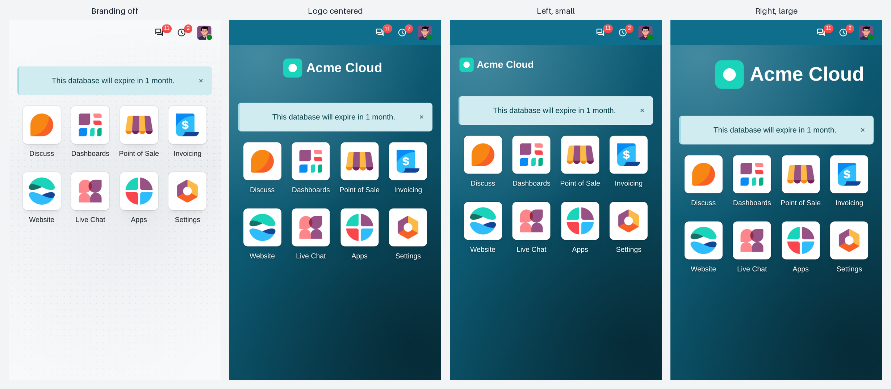
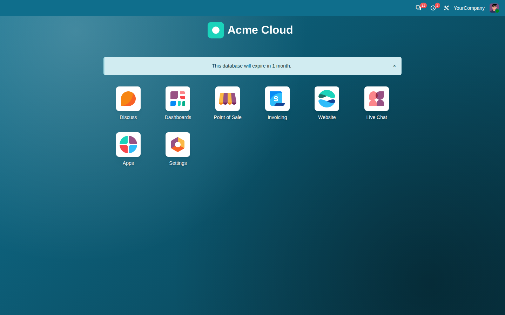
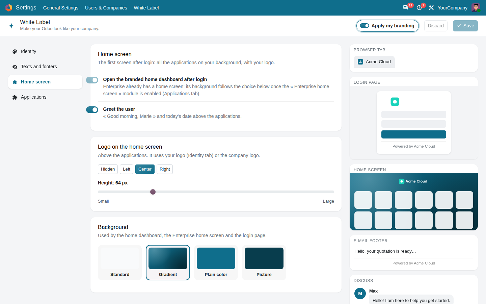

White Label – make your Odoo look like your company
Your name, logo, icon and colors on every screen, the login page, the home screen and the e-mails.

Left, centered or right, at the height you choose, on phones and computers. Nothing changes until you switch your branding on.


Settings > White Label: identity, footers, home screen and applications, with a live preview. Save, then switch on “Apply my branding”.

Small companion modules for the Website, the Point of Sale, the customer portal, Live Chat and the Enterprise home screen. Enable them from the dashboard: an application is never installed for you.
Nothing changes at installation: your branding applies when you switch it on, and switching it off brings back the standard look.
Odoo 17, 18, 19 and 20 · Community and Enterprise · works alongside other modules that change “Powered by Odoo”.
Odoo's copyright notice and the Enterprise subscription checks are left untouched.
Donnez à votre Odoo l'image de votre entreprise : nom, logo, icône, couleurs, écran d'accueil et e-mails, depuis un tableau de bord avec aperçu en direct. Rien ne change à l'installation : vous activez votre image quand vous êtes prêt.